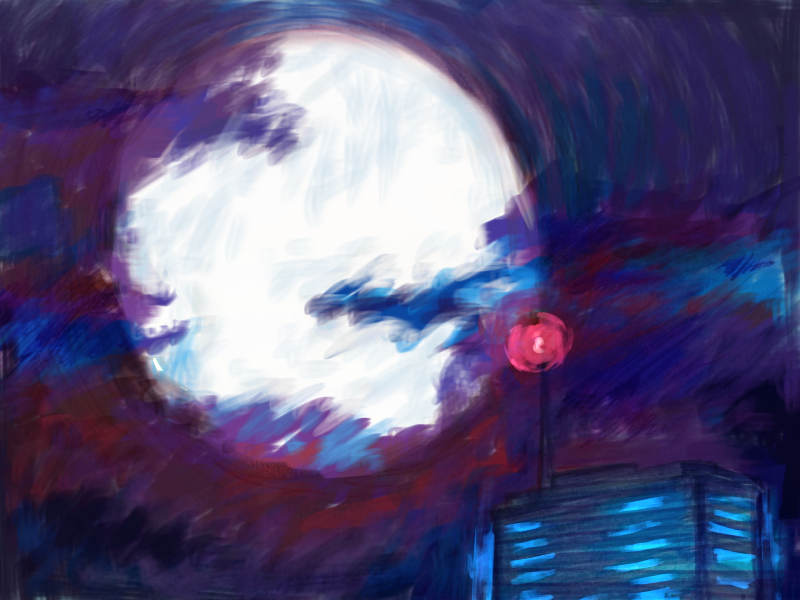

Conceptual Art and Enviroment
Concept Art refers to all that art created with the purpose of visually defining the initial look of any visual aspect that the medium requires. This is an early stage used to begin to clarify the ideas that are needed to begin polishing through the design stage. In the case of this page, images of early stages of places and environments that were devised from ambiguous concepts and that became clearer over time are shown.
Get in line with the Aesthetics
A simple highway, drawn with hues of blue, pink and purple. Sounds easy, it's easy.
Even from the simplest of enviroments shown, one can get an idea to get to work as soon as possible.
Experimenting with Brushes
The same idea as the last one, however they are totally different.
A heavily clouded night, a city barely in sight with a full moon above it. I'm attracted to the idea of action oriented stories that happen mostly past midnight.